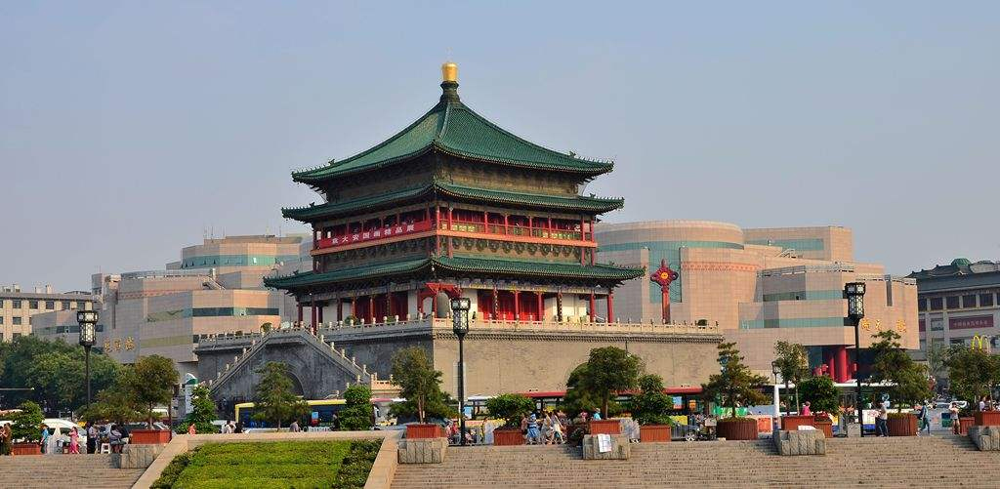

西安介绍

西安简介

世界历史名城，华夏精神故乡—西安。
西安，古称“长安”、“京兆”。是举世闻名的世界四大古都之一，是中国历史上建都时间最多、建都朝代最多、影响力最大的都城，是中华民族的摇篮、中华文明的发祥地、中华文化的代表，
有着“天然历史博物馆”的美誉。 西安，在《史记》中被誉为“金城千里，天府之国”，是中华民族的发祥之地，由周文王营建，建成于公元前12世纪，先后有21个王朝和政权建都于此，是13朝古都，
中国历史上的四个最鼎盛的朝代周、秦、汉、唐均建都西安。西安高陵杨官寨遗址发现，将中国城市历史推进到了6000年前的新石器时代晚期，同时确定了西安是世界历史上第一座城市。
标志性建筑：大雁塔、钟楼、鼓楼、明城墙、大明宫、大唐芙蓉园、小雁塔等。
西安是历史悠久的世界历史文化名城，是举世闻名的世界四大文明古都之一，居中国古都之首，是中国历史上建都时间最长、建都朝代最多、影响力最大的都城，是中华民族的摇篮、中华文明的发祥地、
中华文化的代表。远古时代，“蓝田猿人”就在这里繁衍生息；新石器“半坡先民”在此建立部落，公元前十一世纪，周文王在沣河两岸建立丰镐二京，从此揭开了西安千年帝都的辉煌史，有着3100多年的
建城史和1200多年的建都史，先后有周、秦、汉、唐等13个王朝在这里建都，有“秦中自古帝王州”的美誉。
西安曾经是中国政治、经济文化中心和最早对外开放的城市，著名的丝绸之路以西安为起点；“世界八大奇迹”之一的秦始皇陵兵马俑则展示了这座城市雄浑、厚重的历史文化底蕴。悠久的历史文化积淀使西安
享有“天然历史博物馆”之誉。文物古迹种类之多，数量之大，价值之高，在全国首屈一指，许多是国内仅有、世界罕见的稀世珍宝。